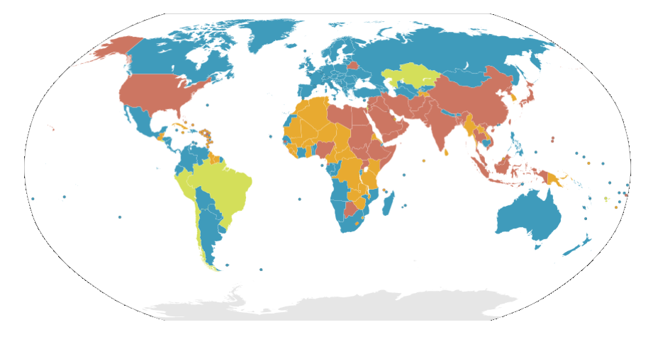

Pomen barv:
- modra: odpravljena za vse zločine(93 držav)
- zelena: odpravljena za navadne zločine, razen v izjemnih okoliščinah kot so npr. vojni zločini (11 držav)
- oranžna: zakonita oblika, vendar v praksi ni bila izvedena že vsaj 10 let (32 držav)
- rdeča: zakonita oblika kazni, ki se izvaja v praksi (64 držav)
Danes smrtno kazen ohranja 64 držav na svetu, vendar pa je število držav, ki usmrtitve dejansko izvajajo tudi v praksi, iz leta v leto nižje. 93 držav, med njimi skorajda celotna Evropa, je popolnoma ukinilo smrtno kazen, 32 držav že več kot 10 let ni izvedlo nobene usmrtitve, 11 jo je ukinilo za vse prekrške, razen posebne prekrške storjene v času vojne. To predstavlja skupaj kar dve tretjini oz. 133 držav, ki so ukinile smrtno kazen v zakoniku ali vsaj v praksi (Amnesty International, 2007)